Я разглядывал коробку с документами, а мой мозг тем временем кричал от ужаса где-то в глубине сознания, будто пытался уничтожить себя одной лишь силой воли. Он застрял в петле между отчаянным желанием узнать правду и желанием выпрыгнуть из черепа и с радостью броситься в океан.
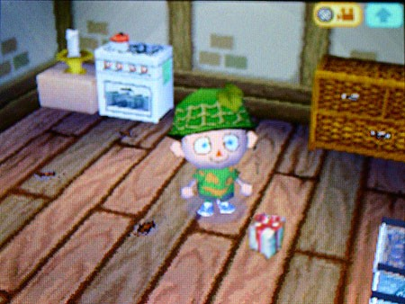
И я начал читать.
В папках было полно документов: договоры с подрядчиками на стройку, бумаги о покупке частного острова, куча квитанций — но нигде не было сказано, где именно находится этот остров. Похоже, на тот момент его только что нашли.
Судя по датам, Нук купил этот остров очень давно. Он, видимо, был крупным риэлтором, работал с богатыми и влиятельными людьми — одним из тех мудаков, чьи рожи висят на билбордах вдоль шоссе
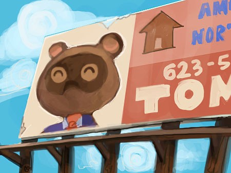
Как ему удавалось выглядеть как ёбаный енот и оставаться неузнанным?
Из бумаг я понял, что Нук был не один. В конце карьеры он работал с японским бизнесменом, который вложил крупную сумму в покупку острова. Они несколько раз приезжали сюда, чтобы спланировать строительство.
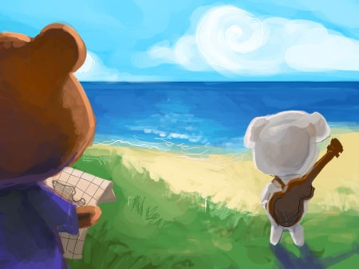
Этого парня звали Тотакеке, что ли…? Тоу-та Кей-кей? Стоп, это имя… кеке… да ёбаный ж ты, это же Кей Кей Слайдер! Слайдер был партнёром Нука?!
Я перебрал с десяток контрактов на строительство. Всего через несколько недель после покупки острова Том и К. К. начали строить частные пляжи для богатых туристов. Вот почему все эти лагеря частные и обнесены стеной!
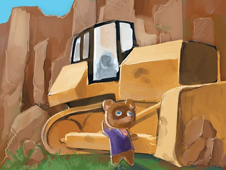
Там говорится, что стройка шла медленно из-за дороговизны перевозок и рабочих. Похоже, мы были правы насчёт парома. И похоже… стройка так и не была закончена? Около десяти лет назад случилось что-то странное. Нук аннулировал все контракты в один день, хотя это должно было стоить ему миллионы. А по квитанциям он скупил всё оборудование для раскопок на острове.
И это всё, что я могу найти… стоп. В глубине коробки лежит маленькая тетрадь на спирали. Я глянул на обложку — и меня передёрнуло.
Ёб твою мать, это личный дневник Нука.
На секунду я почти решил не читать его — просто сжечь всё и забыть. Я научился жить с тем, что не знаю правды. Не уверен, что смогу справиться с ней, когда узнаю. Но я не могу остановиться. Я переворачиваю потёртую обложку и ныряю в это дерьмо с головой.
Мои пальцы летят по страницам. Я читаю так быстро, что схватываю только обрывки, но все они складываются в одну огромную, ужасную картину. С каждой страницей я понимаю всё больше.
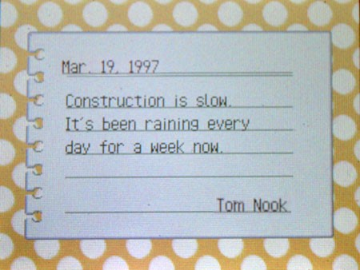
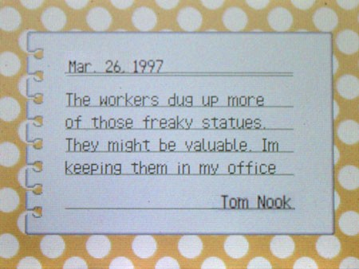
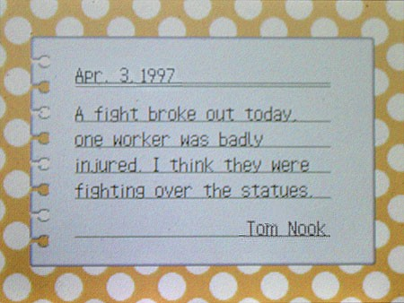
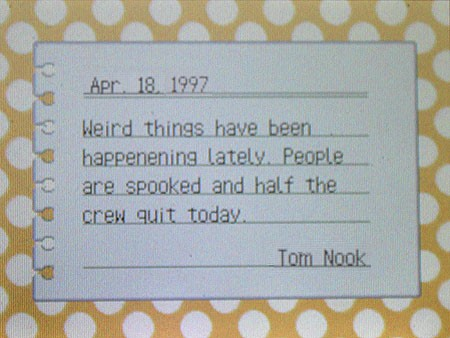
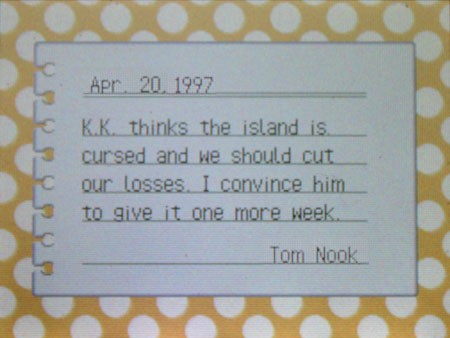
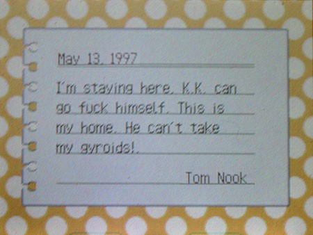
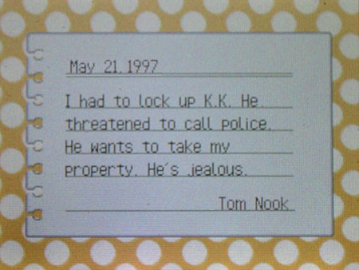
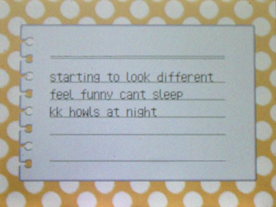
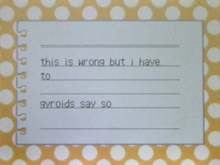
Бредни Нука становится ещё бредовее. Далее на страницах видны лишь одни каракули или детские рисунки. Похоже, из дневника вырвали целый кусок — видимо, там было одно безумие. И вдруг я замечаю, что записи обрываются на семь лет и возобновляются уже совершенно осмысленно. Это странно.
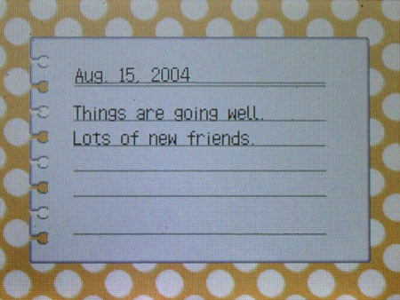
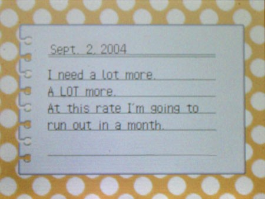
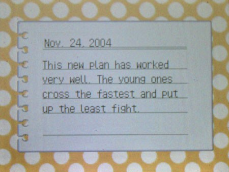
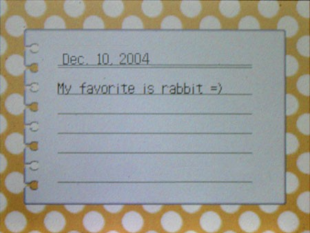
Кровь стынет в жилах. Внезапно до меня доходит, что происходит, и меня чуть не выворачивает. Я хочу просто вырубиться и ничего не чувствовать, но мозг уже собрал эти кусочки пазла воедино.
Том Нук не был енотом! Том Нук когда-то был человеком!
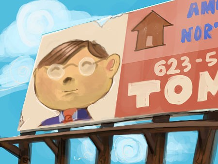
Когда он строил свои частные курорты с Кей Кеем, рабочие начали находить гироидов. Нук собирал их, но статуэтки странно влияли на людей — они начинали вести себя непонятно. Кей Кей хотел остановить Нука, но тот уговорил его подождать ещё неделю. А потом гироиды добрались и до него.
Я вдруг вспомнил один разговор с Нуком. Тогда он показался мне полной ерундой, но теперь я всё понимаю.
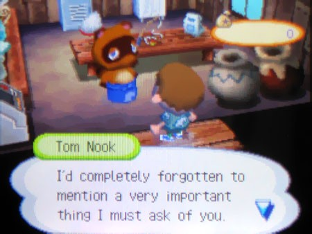
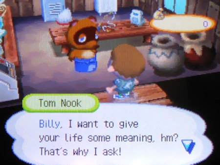
Вот дерьмо!
Чем дольше ты рядом с гироидами, тем больше ты превращаешься в какую-то ёбаную зверюгу!
Нук называл это «Звериный переход»
Вот почему на острове полно зверей-людей… но Нук понял, что это занимает время. Судя по датам, на это уходит больше полугода, и дети проходят процесс быстрее. Его главная проблема — держать людей в плену и живыми так долго…
Блядь. Господи. Всё встало на свои места.
Весь этот лагерь создан, чтобы меня отвлечь!Та ложь.
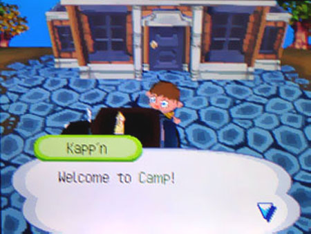
Та бесполезная работа.
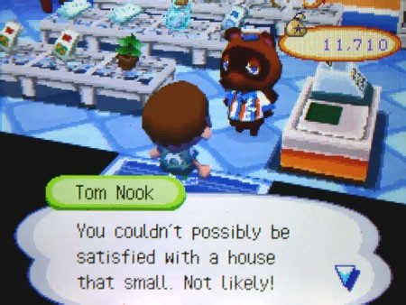
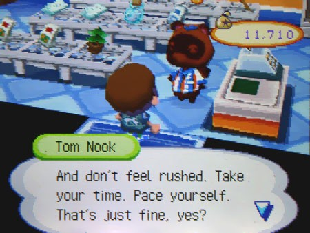
Та ловушка.

Кей Кей.

Теперь я понимаю, почему он выглядит таким убитым, будто смирился с тем, что случилось. Поэтому он не сидит в моём лагере — он, наверное, ездит по всем клеткам острова в разные дни, пытаясь хоть как-то подбодрить детей, которые здесь заперты. Я решил: если выберусь, я захвачу Кей Кея. А потом…
Тот музей.

Вот почему музей пустой — это просто бессмысленная трата времени! Я уверен, что после того, как какой-нибудь ребёнок превращается в зверя, они выбрасывают всё дерьмо, которое он собрал, чтобы следующий начал заново. Блейзерс, ебаный ты эксперт, всё время пытался отвлечь меня своими…
Окаменелостями!
Ебать я кретин! На уровне моря не бывает костей динозавров — их сюда подкидывают! Они не выходят из земли — их туда закапывают!
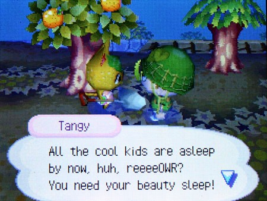
Жители, наверное, по ночам подкладывают новых, пока я сплю, — поэтому я всегда вижу свежие холмики. Поэтому жители никогда не сдавали ничего в музей! Поэтому я видел Танги с лопатой ночью! Погоди, не значит ли это…
Грёбаные гироиды!
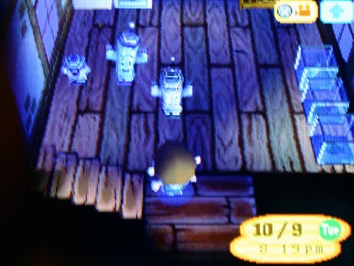
Ёб меня в рот. Нук хотел, чтобы я их нашёл! Он хотел, чтобы я притащил их в дом и помешался на них. Если бы он просто заставил меня держать их, я бы сопротивлялся, а так… БЛЯДЬ! С тех пор как я их нашёл, стал тупить, а мысли плывут. Похоже, чем больше ты с ними контактируешь, тем быстрее превращаешься. Я вроде ещё человек, но я уже не помню, сколько я здесь…
Но остаётся один вопрос. Главный. Зачем Нук делает из нас животных?
Я перечитал его дневник, пытаясь вспомнить всё, что случилось, — руки тряслись так, что я едва держал страницы. Всё упирается в гироидов… Я знаю, они пытаются говорить со мной. Но что они говорят Нуку? Он был первым, кто поддался им… он — первоисточник… что они заставляют его делать? И тут я всё понял.
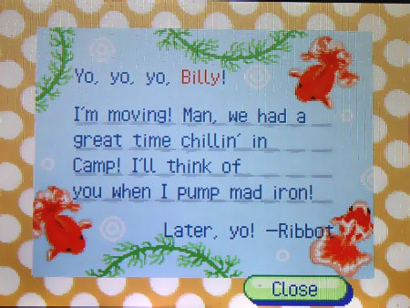
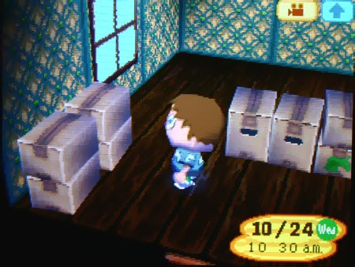
Он нас жрёт…
Вот почему жители просто исчезают бесследно. Как только они становятся зверями, он их сжирает, больной мудак! Это гироиды приказывают ему?! Или он просто отыгрывает какого-то бешеного енота?! КАКОГО ХУЯ?!
Я думаю, ему… просто нравится…
Я пытался дышать, но не мог. Стены сжимались. Я потерял время — перебирал бумаги весь день, солнце садилось. Меня трясло, голова кружилась. Я не знал, что делать. Я думал о Пенни. Что они с ней сделали?!
Я бы, наверное, сейчас слетел с катушек, если бы дверь не вышибли.
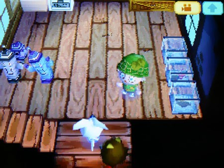
Внутрь ворвались звери-мутанты, вцепились в меня своими когтями, раздирая кожу, и выволокли меня, орущего, из дома прямо в темноту ночи.